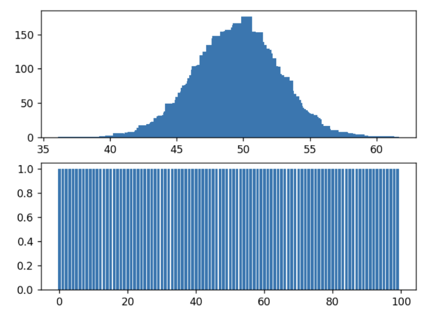

During the data analysis part of our project, the program initially instantiates objects of type; Bootstrapper, SourceAnalyser and DataAnalyser.
The Bootstrapper class was designed to take in data (in this case a dataset of hazard results in the form of a 2D array), and then return that same dataset but without outliers, and it also returns the confidence interval. It then calculates means from random subsamples of the dataset (if no sample number is specified, our class defaults to 100,000), and then stores these in a list of random means. Our class then calculates the confidence interval of the data; for which a frequency table is created for the random means, we then use this to create upper and lower bounds. The lower confidence interval is calculated as the first random mean where the cumulative total of the sorted array (of random means) is higher than the lower bound, the inverse is then applied for the higher confidence interval. Lastly, our program removes the outliers by looping through the original dataset and returning the data that lies within the confidence intervals.
The SourceAnalyser class is designed to take a list of sources as input, and return a file where the source output is analysed. Firstly, the class adds the correctly FileReaders for the inputted sources into an array of readers and reads in the data from the necessary sources. The class then loops through each year’s data for each country and calculates the total number of records for each country, and the total number of records overall.
DataAnalyser is a class for analysing the data after the filters have been applied during the data analysis. The class starts by splitting the 2-Dimensional array into 3, 1-Dimensional arrays (deaths, affected and displacements). The class then uses the Bootstrapper class to remove outliers if calculations are to be done without outliers. Next, the mean and standard deviations are calculated for each of the three sub-datasets using traditional methods, which are then returned to the main program.
After initiating all the required objects, the program begins the data analysis, in which, 8 different analyses are completed (and repeated for calculations without outliers being removed).
The program then writes the output to a unique results file with a unique naming convention mathemical_analysis_pcp[initial of filter (e.g. m = month)]* , where * implies the contents of [] can be repeated numerous (>= 0) times. Next the program looks at the data when sorted by country per month per profile and calculates the percentages of each given filter, for example, 25% of German Metrological and Hydrological natural disasters occur in January. The same is then completed for data sorted by country by month by type.
The final stage of the data analysis is the source composition analysis, in which a powerset of the set of sources is created and then the SourceAnalyser class analyses each individual powerset element (see paragraph 3).